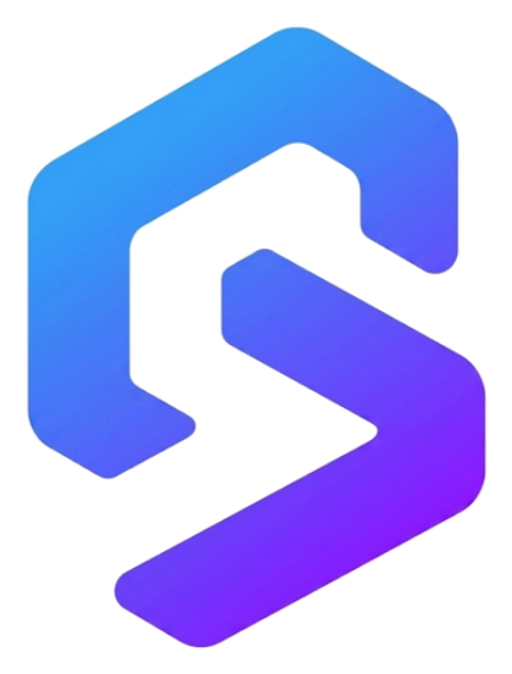
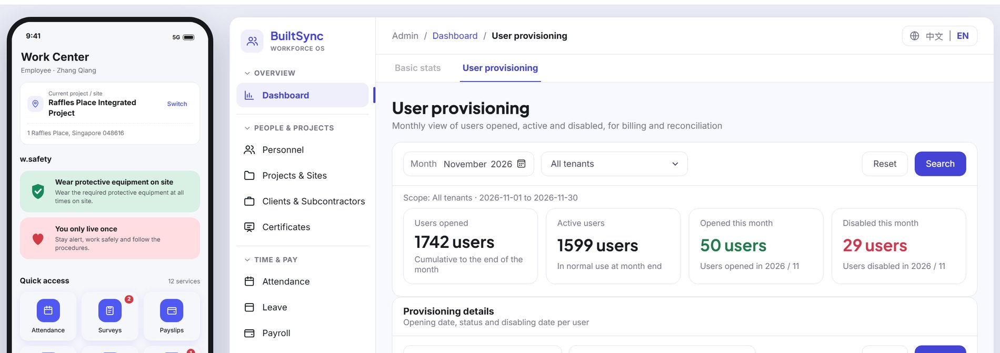
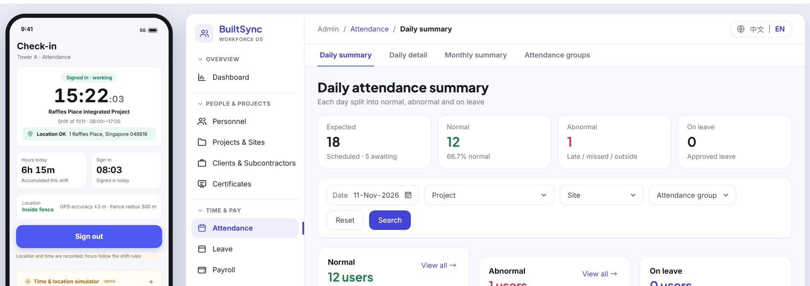
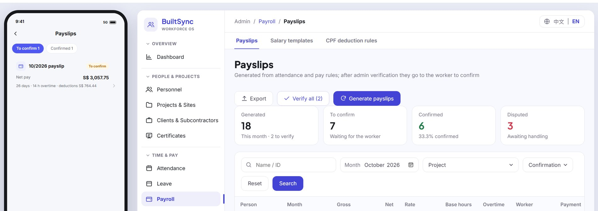
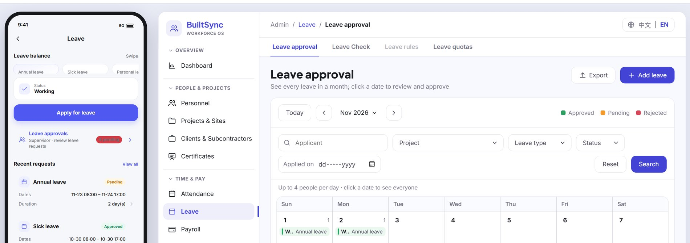
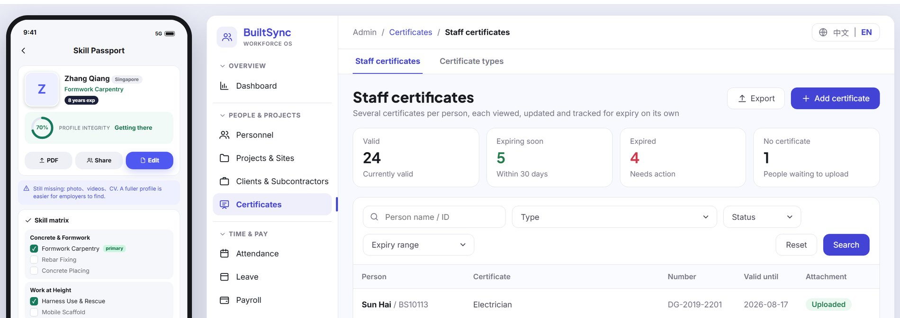

Workforce OS for project sites
Every worker, every shift, every site, in one place.
BuiltSync is a worker app and an admin console that carry one record from the first check-in of the day to the payslip at the end of the month.
From the first check-in to the last payslip.
Phase 1: tap through the app and the console.
This is the same interactive demo as on the Clarity site: 22 worker app screens and 14 admin console screens, in English or Chinese. Tap the highlighted areas to move around, or play the tour.
From check-in to payslip
Check in
The worker checks in on site. Location, time and face are verified.
Monitor
Admins see who is in, who is late and who is outside the geofence.
Get paid
Hours roll into payslips that workers confirm, or dispute, in the app.
Phase 2: the working prototype.
Phase 2 puts the worker app and the admin console side by side on live demo data, and adds claims, permit to work, training, dormitory beds, a skill passport and site chat. Scroll for five real screens, then use the prototype itself.
One system, two faces
A worker app and an admin console, working from the same record. These are real screens from the Phase 2 prototype, with sample data.
Check in on the phone
The worker signs in from site. The app confirms the location is inside the geofence and starts counting the shift.
The admin's daily summary updates at once: expected, normal, abnormal, on leaveA payslip the worker confirms
Payslips are generated from attendance and pay rules. The worker sees net pay, days, overtime and deductions, and confirms or disputes.
The admin sees which payslips are confirmed, waiting or disputedLeave, on a calendar
The worker applies against their balance and tracks each request. Admins approve from a month view of the whole workforce.
Certificates and skills
Each worker carries a skill passport. Admins see every certificate with its number, expiry and status: valid, expiring soon or expired.
Expiring certificates are flagged before they lapse





Now use Phase 2 yourself.
The prototype runs here on demo data. Pick a module and the worker app and the admin console both jump to it; from there every button works, so carry on wherever you like.
What BuiltSync is, and the problem it is for
On most project sites, the facts about a working day are scattered. Attendance sits on a paper timesheet or in a photo sent to a group chat. Leave is agreed verbally. Certificate expiry dates live in a spreadsheet one person maintains. Payroll is then rebuilt from all of this at month end, and any disagreement about hours turns into an argument with nothing to check it against.
BuiltSync puts those facts into one system with two faces. Workers carry an app that checks them in, shows their documents, takes leave requests and presents their payslip. Supervisors and admins use a console that shows who is on site right now, flags what looks wrong, and releases pay.
It was built by LENIX for Singapore project sites, so it is designed around work permits, NRIC/FIN, CPF and MOM-issued certificates, and it runs in English and Simplified Chinese.
What it does, function by function
- AttendanceGeofenced and face-verified
- Check-in and check-out use the phone's GPS against the site geofence, plus face recognition. Late arrivals, early leaving, punches outside the geofence and missing punches are flagged for review automatically, so a supervisor reviews exceptions instead of reading every line. The console gives daily summary, daily detail and monthly summary views.
- PayrollPayslips workers can check
- Payslips are generated from attendance and pay rules. A worker sees gross pay, overtime, CPF and deductions, then confirms or disputes. Admins review, adjust and release the payout, which keeps a dispute inside the system instead of on a piece of paper.
- LeaveFrom request to approval
- Workers apply from the app against their balance. Supervisors approve on the go, and admins see the whole workforce on a monthly leave calendar.
- CertificatesPermits that do not lapse unseen
- Work permits and trade certificates are recorded with number, issuer and expiry date. Both the worker and the admin are reminded before anything expires.
- SafetyIn front of every shift
- Safety reminders sit on the worker's home screen. Admins can set a notice that appears at check-in, run site-entry quizzes and send broadcasts.
- Admin consoleOne place for the whole workforce
- Analytics, staff roster, projects and zones, roles and data scope, announcements and an audit log, with Excel export. Like the worker app, it is bilingual.
- In the Phase 2 prototypePreview, not yet released
- The prototype adds expense claim review, permit to work, training booking, dormitory beds, a skill passport, site group chat, surveys, and client and subcontractor records. These are visible in the preview and may change before release.
Who it is for. Main contractors, subcontractors and manpower suppliers in Singapore who run workers across several project sites, and who are tired of rebuilding attendance for payroll every month.
How it compares with the usual alternatives
| Criterion | BuiltSync | Paper timesheets and spreadsheets | Fixed biometric time clocks | General HR and payroll software |
|---|---|---|---|---|
| Proof a worker was on site | GPS against the site geofence plus a face check, on the worker's own phone | A supervisor's signature | Fingerprint or face at a terminal fixed to one spot | Mobile clock-in is common; location and face checks vary by product |
| Setting up a new site | Draw the site and its zones in the console | Nothing to set up | Install, power and network a terminal at each gate | Add a location; it rarely models zones inside a site |
| From hours to payslip | Verified hours flow straight into the payslip | Re-keyed by hand at month end | Exported, then imported into payroll | Integrated, if you also use its payroll module |
| What the worker sees | Their hours, overtime, CPF and deductions, with a confirm or dispute button | A paper payslip | Nothing | Usually a payslip view; disputes happen outside the system |
| Permits and trade certificates | Tracked with issuer and expiry, with reminders to worker and admin | A separate spreadsheet | Not covered | Often document storage, not built around MOM certificates |
| Safety communication | Check-in notices, quizzes and broadcasts are built in | Toolbox talks and paper sign-offs | Not covered | Not usually covered |
| Languages for workers | English and Simplified Chinese | Whatever the supervisor speaks | Not applicable | Usually English first |
| What it depends on | A smartphone with camera, GPS and data for every worker | Diligent supervisors | Hardware at every entry point | Office staff to run it |
The comparison is against the typical setup in each category, not a named product. Individual products and agencies differ, so check the ones you are considering.
Where BuiltSync is stronger
- One record, start to finish. The hours a worker is paid for are the hours the system verified, with no re-keying in between.
- Problems surface the same day. Late, missing and out-of-zone punches are flagged automatically instead of being discovered at payroll.
- Disputes have something to check against. Workers confirm or dispute inside the app, and the console keeps an audit log.
- No hardware to install. A new site is a geofence drawn in the console, not a terminal bolted to a gate.
- Built for Singapore sites. Work permits, NRIC/FIN, CPF and MOM-issued certificates are part of the design, not an add-on.
See BuiltSync on your own site.
Tell us about your sites and your workforce. We will show you the products on your own use case.